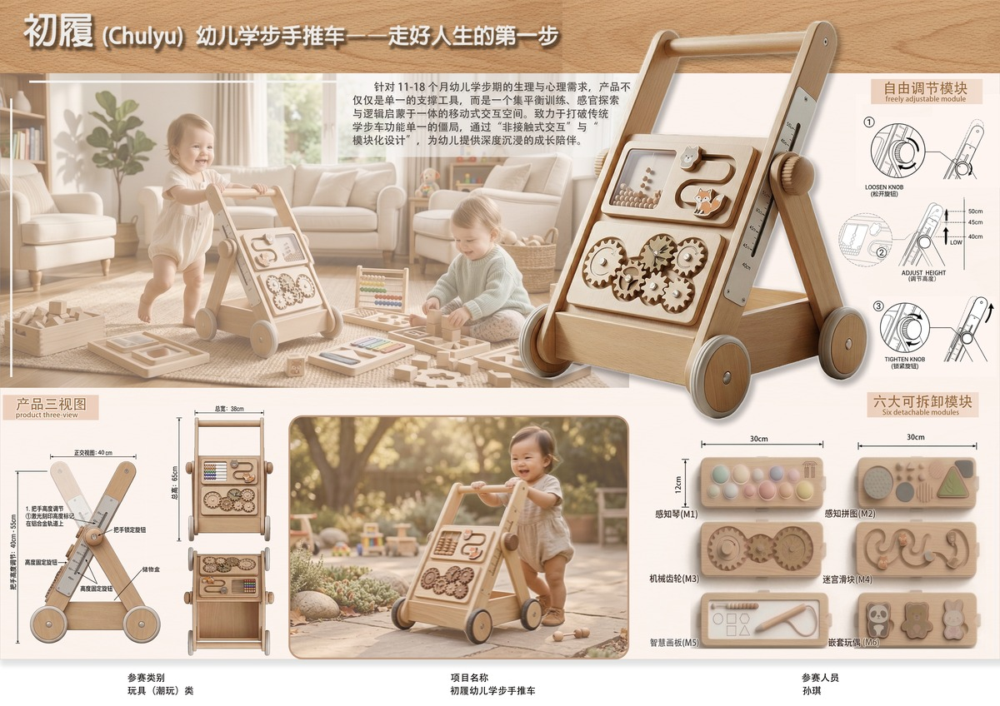

ChuLv Baby Walker
专为初学步行的婴幼儿设计的手推车产品。在确保安全性的前提下，通过趣味性的形态语言和丰富的色彩组合，激发宝宝的探索欲望。结构稳定、材质安全，陪伴宝宝迈出人生第一步。

学步期是婴幼儿成长的关键阶段，一款好的学步辅助产品不仅要保证安全性，更要激发孩子的探索兴趣。初履学步手推车正是基于这一理念设计而成。
安全稳定：采用宽底座设计，重心低，不易翻倒。所有边角均采用圆润处理，避免磕碰伤害。
趣味造型：可爱的动物造型和鲜艳的色彩搭配，吸引宝宝主动使用，让学步过程充满乐趣。
材质安全：选用环保无毒材料，通过国家婴幼儿产品安全标准，家长可以放心使用。
功能丰富：集成多种互动玩具，在辅助学步的同时，锻炼宝宝的手眼协调能力和认知能力。
产品采用模块化设计，可根据宝宝的成长阶段调节高度和功能配置。手推杆采用人机工程学设计，符合婴幼儿的抓握习惯。底部静音轮设计，不会划伤地板，也不会产生噪音。